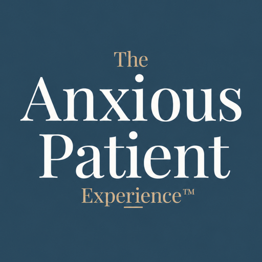

Pre-appointment Questionnaire
An Anxiety Support Pathway for Dental Patients
If you’re feeling nervous about your appointment, you’re not alone. Many patients experience anxiety around dental visits, and it can show up in different ways - worry, tension, overwhelm, or even feeling emotional when you arrive.
Some people also feel embarrassed about their teeth or about avoiding the dentist, but this is something you never need to feel here. Everything you’re experiencing is valid, and you will always be met with understanding and without judgement.
This short form helps me get to know you and tailor your appointment so you can feel calm, supported, and in control.
Your answers are confidential and help us create a calmer experience for you.
Circle the number that best describes how you feel right now
Tick all that apply - there are no wrong answers
If you’re unsure, that’s completely fine - we can explore this together
Tick the options that appeal to you - you can change these at any time. If none of these apply to you, feel free to leave them blank
You can change any of these preferences at any time - just let us know
Remember: these are just starting points. We’ll check in with you regularly and adjust as we go. Your comfort always comes first.
This can be anything - we’ll use this to personalise your experience
I feel most calm when:
Sometimes things that make people feel calm or safe include: a relaxing environment, clear communication, gentle physical reassurance (e.g. hand on shoulder). If you are unsure that’s ok, we will figure that out together.
Tell us some music you enjoy - songs/artists/genres
Do you have any favourite TV shows/podcasts?
Have you had any dental treatment carried out in the past successfully?
If yes - have you ever needed sedation or general anaesthetic to facilitate treatment?
Don’t worry if you can’t remember details - any information helps us understand your experience better.
Tick any that you’ve used before - even outside of dental settings
Please only answer this question if you feel comfortable to
If yes, what helps you manage it?
Even a small one counts - it helps us understand what works for you
If yes, what made it feel better?
For taking the time to share this information with me. I’ll use it to tailor your appointment so you can feel as calm and in control as possible.
Remember - there’s no pressure to answer everything. We can talk through anything together at your appointment.